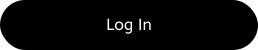
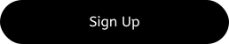

<ion-content>
  <div class="content">
    <div class="white-box">
      <ion-img class="logo" src="../../../assets/logo/ReversAI.svg"></ion-img>   
      <div class="login-buttons">
        <!-- Boutons de connexion -->
        
        
      </div>
      <p>Or continue with:</p>
      <div class="continue-with social-icons">
        <!-- Logos des réseaux sociaux -->
        
        
        
      </div>
    </div>
  </div>
</ion-content>
